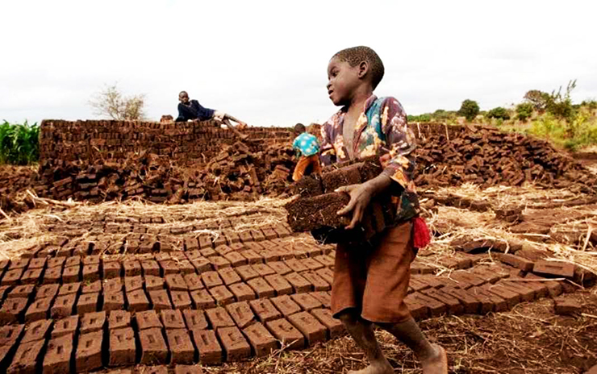

Trabalho infantil
O trabalho infantil é uma grave violação dos direitos da criança, caracterizado pela exploração de menores de idade em atividades econômicas ou de subsistência que prejudicam seu desenvolvimento físico, emocional e educacional. Apesar dos esforços globais para erradicá-lo, milhões de crianças em todo o mundo ainda são forçadas a trabalhar em condições degradantes. Essa prática é mais comum em setores como a agricultura, indústria têxtil, mineração, trabalho doméstico e até em formas mais extremas, como o tráfico e a prostituição.
Definição e Legislação
De acordo com a Organização Internacional do Trabalho (OIT), trabalho infantil é toda forma de trabalho realizado por crianças e adolescentes abaixo da idade mínima permitida pela legislação do país, que prejudique sua saúde, educação e desenvolvimento. No Brasil, a Constituição Federal e o Estatuto da Criança e do Adolescente (ECA) determinam que a idade mínima para o trabalho é de 16 anos, exceto como aprendiz, que pode começar a partir dos 14 anos, com regras específicas.
Principais Formas de Trabalho Infantil
- Trabalho em Condições Perigosas: Crianças são expostas a ambientes perigosos, como fábricas, minas, plantações e pedreiras, onde correm risco de ferimentos, exposição a substâncias tóxicas e acidentes de trabalho.
- Trabalho em Horários Excessivos: Menores de idade são submetidos a longas jornadas, comprometendo o tempo necessário para a educação e o descanso adequado.
- Servidão por Dívida: Muitas crianças são forçadas a trabalhar para ajudar suas famílias a pagarem dívidas, perpetuando a pobreza e a exploração.
- Trabalho Doméstico: Crianças, especialmente meninas, são forçadas a trabalhar como empregadas domésticas, enfrentando jornadas longas, isolamento e, em alguns casos, abusos físicos e psicológicos.
- Exploração Sexual e Tráfico: Em situações extremas, o trabalho infantil assume formas de exploração sexual e tráfico de pessoas, envolvendo crianças em prostituição, pornografia e redes criminosas.
Causas do Trabalho Infantil
- Pobreza e Desigualdade: Em muitas regiões, o trabalho infantil é uma necessidade econômica, onde famílias dependem da renda gerada pelo trabalho das crianças.
- Falta de Acesso à Educação: Em áreas rurais e regiões pobres, a falta de infraestrutura e a necessidade de ajudar nas tarefas fazem com que muitas crianças abandonem os estudos.
- Cultura e Tradição: Em algumas culturas, o trabalho infantil é visto como parte da formação, um meio de aprendizado e desenvolvimento de habilidades.
- Fragilidade das Políticas Públicas: A falta de fiscalização e impunidade para empregadores que exploram o trabalho infantil perpetua a prática.
- Indústria Informal: Muitos casos ocorrem em setores informais, onde a fiscalização é fraca, como em fazendas, oficinas de confecção e pequenas indústrias.
Consequências do Trabalho Infantil
- Saúde Física e Mental: Exposição a riscos graves, como lesões, exaustão, intoxicações e doenças, afeta gravemente o desenvolvimento das crianças.
- Educação Prejudicada: Crianças que trabalham tendem a faltar às aulas, ter baixo desempenho acadêmico e, frequentemente, abandonam a escola.
- Ciclo de Pobreza: Sem educação e qualificação, essas crianças têm poucas oportunidades de ascensão social, perpetuando a pobreza.
- Violação dos Direitos Humanos: O trabalho infantil desrespeita direitos básicos, como o direito à educação, ao lazer e ao desenvolvimento saudável.
Soluções
- Fortalecimento da Legislação e Fiscalização: Países devem garantir que suas leis trabalhistas sejam aplicadas, reforçando ações de fiscalização, principalmente em setores informais.
- Promoção da Educação Universal: A educação gratuita e de qualidade é uma das principais ferramentas para erradicar o trabalho infantil. Governos devem investir em escolas e programas de incentivo à frequência escolar.
- Campanhas de Conscientização: Campanhas devem educar as comunidades sobre os danos do trabalho infantil e os direitos das crianças, visando transformar mentalidades.
- Programas de Apoio às Famílias: Criar programas sociais e econômicos para ajudar famílias, evitando a necessidade da renda gerada por crianças.
- Responsabilização de Empresas: Empresas que se beneficiam do trabalho infantil devem ser responsabilizadas. Auditorias em cadeias de fornecimento e certificações de produtos éticos são fundamentais.
- Apoio Internacional e Colaboração: O combate ao trabalho infantil exige uma ação global coordenada entre governos, ONGs e o setor privado.
- Programas de Reabilitação e Reintegração: Crianças resgatadas devem receber apoio para reabilitação e reintegração escolar, além de suporte psicológico.
Exemplos de Combate ao Trabalho Infantil
- Brasil: O Brasil tem sido líder global na redução do trabalho infantil, com programas como o Programa de Erradicação do Trabalho Infantil (PETI) e o Bolsa Família.
- Gana e Costa do Marfim (Cacau): Esses países implementaram programas de monitoramento e certificação para combater o trabalho infantil nas fazendas de cacau, criando uma cadeia produtiva mais ética.